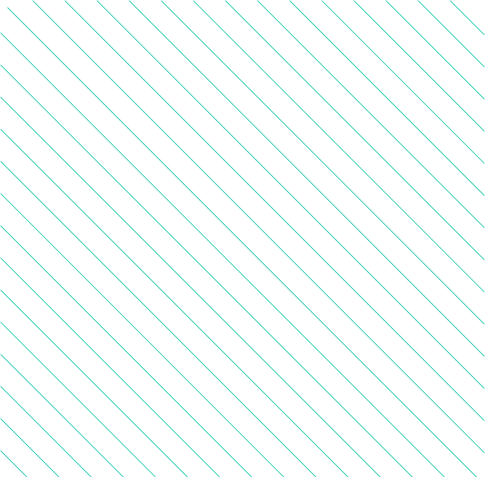

<section>
  <div class="content-wrapper">
    <div class="profile-image-container">
      
      
    </div>

    <div class="about-me-content">
      <h3>Who I Am</h3>
      <div class="about-me-header">
        <h2>About me</h2>

        <span>
          Hi, I’m a german speaking Frontend Developer based in Munich.
          Motivated by the limitless opportunities within IT, I am excited about
          crafting visually captivating and intuitive websites and applications.
        </span>

        <div class="info-section">
          
          <span>
            Flexible in terms of working environments, I can work effectively
            both on-site in Munich and remotely.
          </span>
        </div>

        <div class="info-section">
          
          <span>
            I am open-minded and always looking for personal challenges to
            constantly improve my knowledge and skills.
          </span>
        </div>

        <div class="info-section">
          
          <span>
            In my profession, programming isn't just about writing code; it's a
            creative form of problem-solving. I take pride in my ability to
            distill complex technical challenges into simple, user-friendly
            solutions. This way, I help you achieve your goals and bring your
            visions to life.
          </span>
        </div>
      </div>
    </div>
  </div>
</section>
